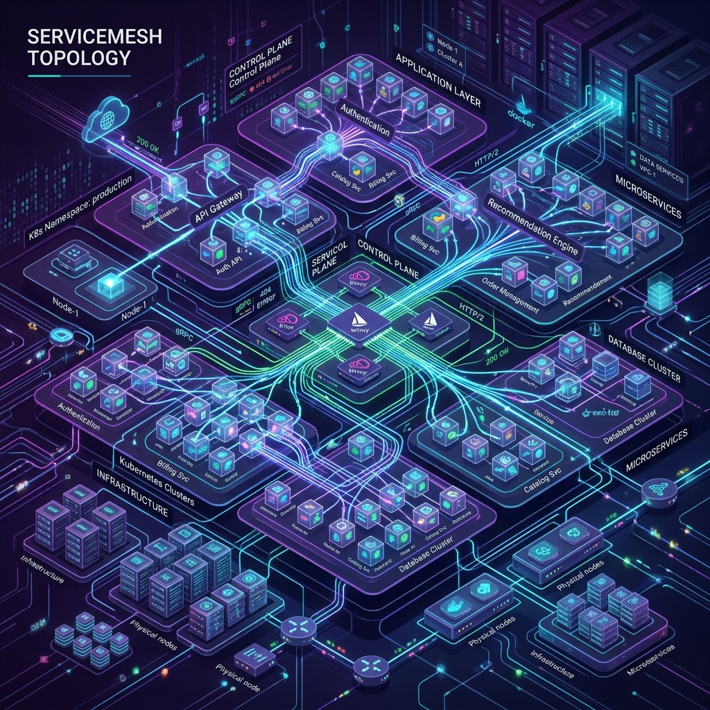

Global Infrastructure

Real-time latency mapping across multi-region deployments.
System Health
99.999%
UptimeAlerts
0
Active P1 Incidents
Load
32%
CPU Average
Advanced SRE consulting. We build 3D visualizations, real-time distributed tracing, and ultra-premium Grafana architectures for enterprise infrastructure.
Real-time latency mapping across multi-region deployments.
Active P1 Incidents
CPU Average

High-throughput log ingestion, parsing, and indexing pipeline designed for petabyte-scale observability.
We craft UI/UX optimized Grafana panels that turn raw data into actionable intelligence.
Mean Time To Resolution (MTTR) reduced drastically across all our enterprise clients.
Enterprise Stacks
5B+ Metrics/Sec
100% SLO Adherence
24/7 SRE Coverage